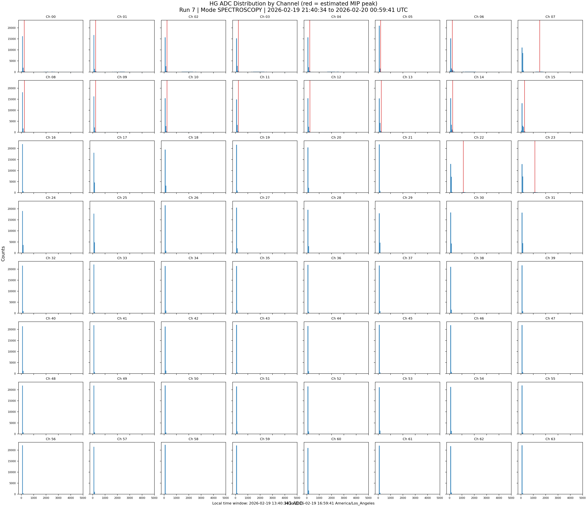
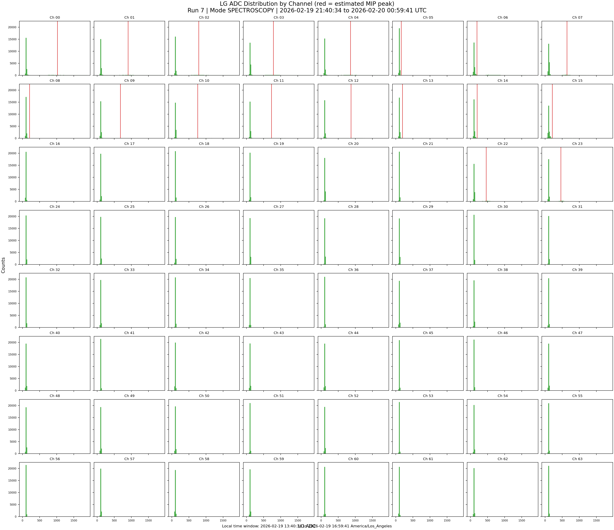
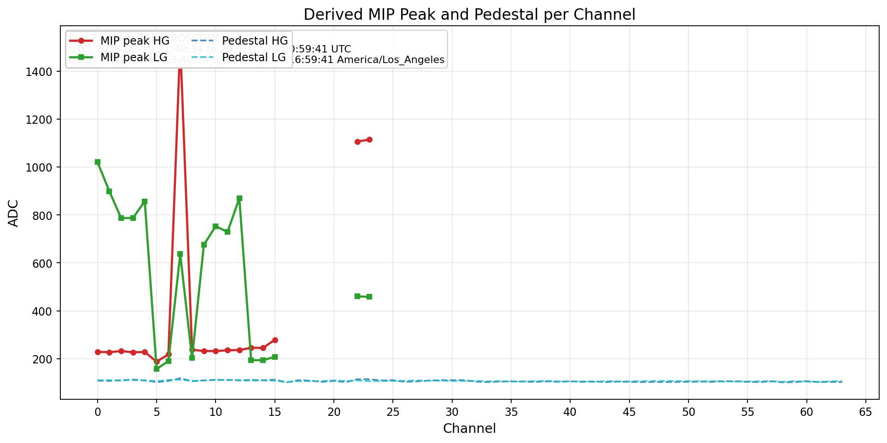
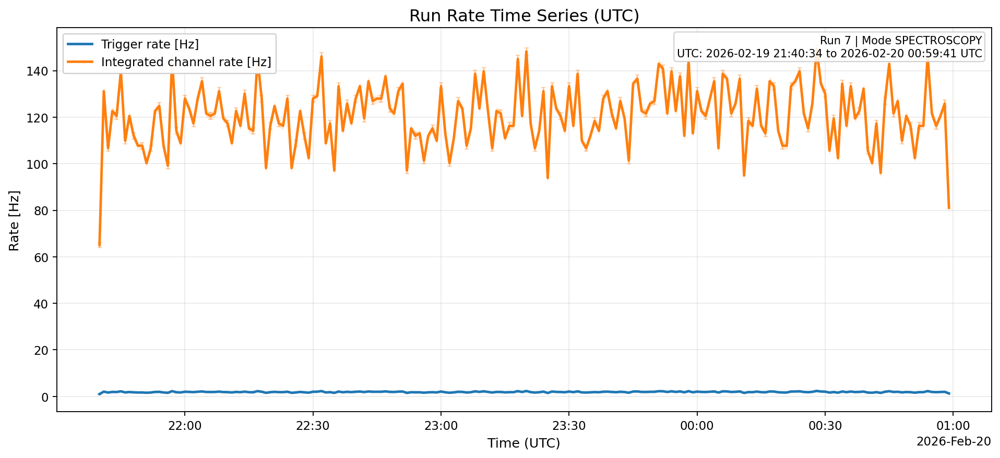
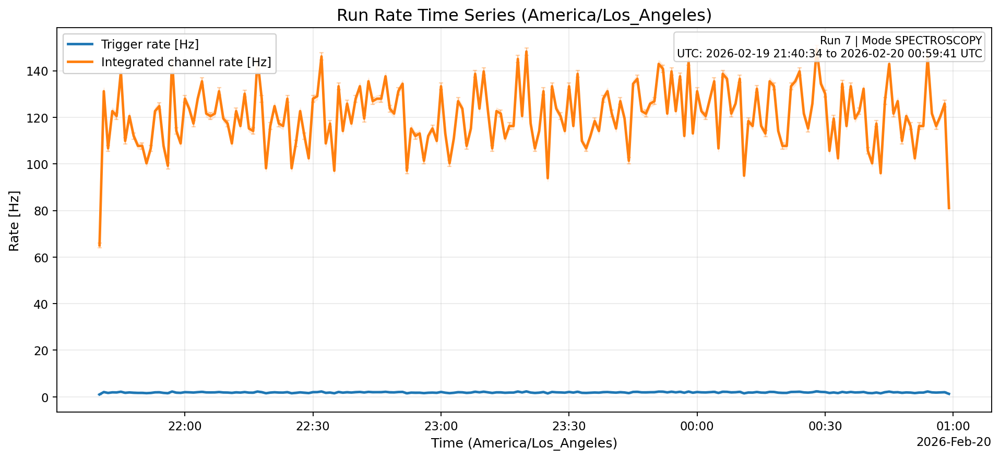
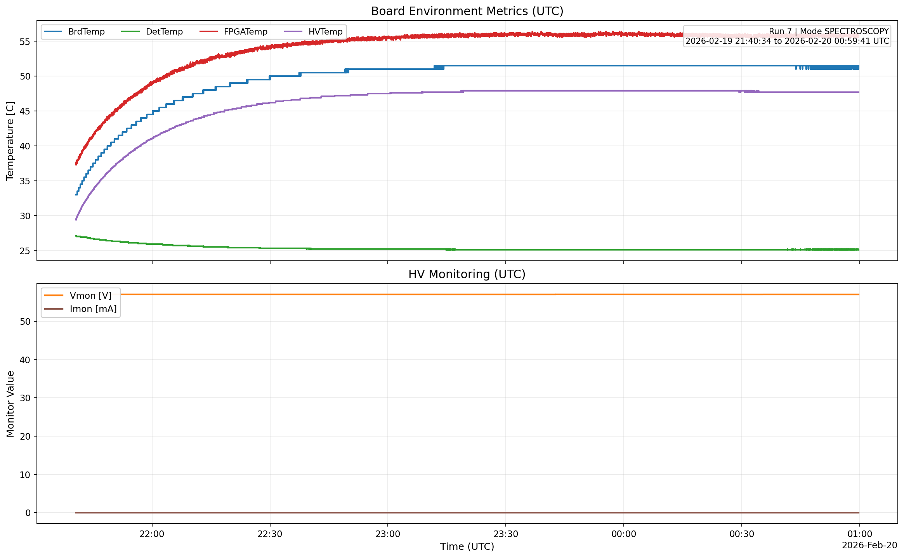

| run_start_utc | 2026-02-19T21:40:34+00:00 |
| run_start_event_utc | 2026-02-19T21:40:34.949205864+00:00 |
| run_stop_event_utc | 2026-02-20T00:59:41.250632968+00:00 |
| run_start_local | 2026-02-19T13:40:34.949205864-08:00 |
| run_stop_local | 2026-02-19T16:59:41.250632968-08:00 |
| detected_mode | SPECTROSCOPY |
| gain_select | BOTH |
| list_file_format_version | 3.3 |
| events | 22643 |
| channels | 64 |
| total_samples | 1449152 |
| run_duration_s_from_events | 11946.301 |
| trigger_rate_hz_avg | 1.8954 |
| integrated_hit_rate_hz_avg | 121.3055 |
| mip_peak_hg_channels_with_estimate | 18 |
| mip_peak_hg_mean_adc | 401.424 |
| mip_peak_hg_std_adc | 397.596 |
| mip_peak_lg_channels_with_estimate | 18 |
| mip_peak_lg_mean_adc | 559.876 |
| mip_peak_lg_std_adc | 301.069 |
| vmon_mean_v | 57.0 |
| imon_mean_ma | 0.00704 |
| board_temp_mean_c | 49.647 |
| det_temp_mean_c | 25.323 |
| fpga_temp_mean_c | 54.047 |
| hv_temp_mean_c | 46.05 |
| AcquisitionMode | SPECTROSCOPY |
| GainSelect | BOTH |
| TriggerLogic | MAJ64 |
| HG_Gain | 25 |
| LG_Gain | 55 |
| Pedestal | 100 |
| HV_Vbias | 57 |
| TD_CoarseThreshold | 450 |
| QD_CoarseThreshold | 250 |





